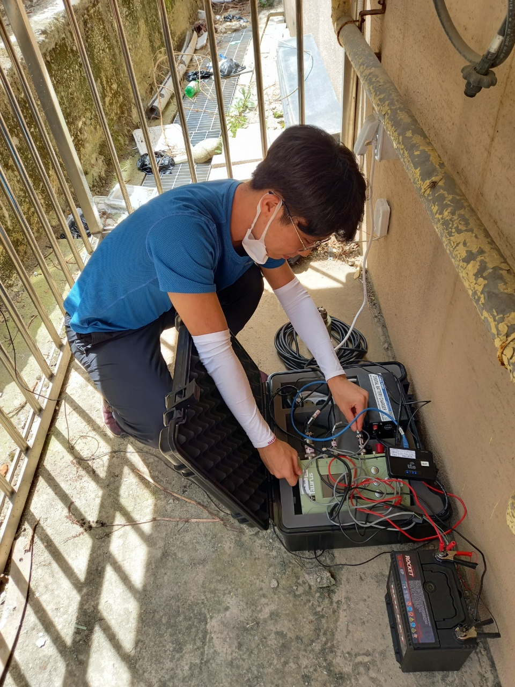

FIELDWORK
Although much of my research is computational and data-driven, I have also enjoyed the fieldwork aspect of seismology. During my earlier research in South Korea, I participated in several field campaigns installing and operating broadband seismometers and dense geophone arrays. These field campaigns gave me experience with seismic instrumentation and data acquisition across a range of geological settings.
I am familiar with:
- Broadband seismometer Trillium Compact
- Digital recorders Centaur and Taurus
- Geophone SmartSolo IGU-16HR 3C
CAMPAIGNS I PARTICIPATED IN
Jul 2021
Ulleung Island, South Korea
Oct 2020 –
May 2021
May 2021
Hallasan Mountain, Jeju Island, South Korea
Nov –
Dec 2020
Dec 2020
Yeoncheon County, South Korea

Figure: Deploying equipment in the field.